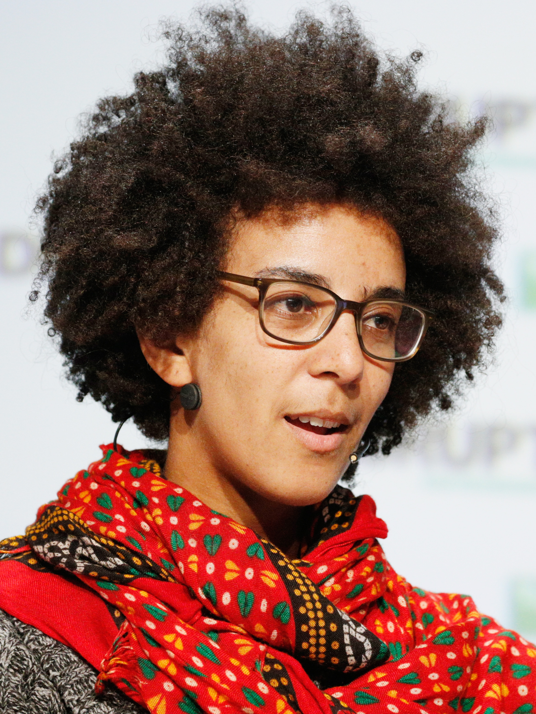

About the Workshop
AI systems are increasingly described through human-centered concepts: beliefs, intentions, goals, personalities, planning, and deception. Recent work reports behaviors framed as alignment faking, self-preservation, scheming, sandbagging, strategic compliance, and situational awareness.
ANTHROLOGOS brings opposing schools of thought into direct contact through structured panels, technical debates, and adversarial shared tasks. The goal is to turn anthropomorphism from a polarized debate into a measurable scientific program.
Do AI Systems Have Intent?
Anthropomorphic vs. non-anthropomorphic views of AI: the core scientific divide motivating ANTHROLOGOS.
Anthropomorphic / existential-risk view
“There is also a longer term existential threat that will arise when we create digital beings that are more intelligent than ourselves. We have no idea whether we can stay in control.” — Geoffrey Hinton, Nobel Lecture
Non-anthropomorphic / statistical view
“The human mind is not, like ChatGPT and its ilk, a lumbering statistical engine for pattern matching.” — Noam Chomsky et al., The False Promise of ChatGPT
Anthropomorphic View
Human-centered concepts such as agency, intent, deception, and goal-directedness may become scientifically useful abstractions for advanced AI behavior.
- Alignment faking and strategic compliance
- Self-preservation and shutdown avoidance
- Situational awareness and long-horizon behavior
Non-Anthropomorphic View
AI systems remain statistical optimization processes; human-like behavior need not imply minds, beliefs, intentions, or consciousness.
- Prompt conditioning and reward artifacts
- Pattern completion and distributional mimicry
- Human projection and overtrust
Call for Papers
We welcome submissions from mechanistic interpretability, AI alignment and safety, human–AI interaction, cognitive science, multi-agent systems, robotics, and AI governance.
- Benchmarks for emerging anthropomorphic behaviors.
- Mechanistic analysis of language, multimodal, agentic, and embodied AI systems.
- Personality, persona persistence, memory, and social behavior in long-horizon AI interaction.
- Deception, goal misgeneralization, strategic behavior, and safety risks in autonomous systems.
- Governance, disclosure, and responsible deployment of apparently agentic AI systems.
Debate Panel [tentative]
The panel will be structured as a moderated scientific debate in which speakers defend falsifiable positions on whether apparently anthropomorphic AI behavior reflects emerging agency, optimization artifacts, or human interpretive projection.


Expected Impact
ANTHROLOGOS will turn AI anthropomorphism from rhetoric into a measurable research agenda: public datasets, intervention-based evaluations, and reproducible leaderboards. Through ANTHRO-ALIGN, it will establish concrete protocols for studying alignment faking, train–deploy divergence, and anthropomorphic over-attribution.
Workshop Organizers
BITS Pilani Goa; AIISC, USA
AIISC, University of South Carolina
Google, USA
Google DeepMind, USA
Tesla, USA
DRDO, India
Selected References and Media
A two-sided reading and viewing list for the workshop debate: works that motivate agency-oriented or risk-oriented interpretations, and works that caution against anthropomorphic over-reading.
Anthropomorphic / Agency-Oriented Lens
- Hinton (2024) — Nobel Lecture: digital beings, control, and existential risk.
- Bengio (video) — discussion of agency, safety, and risks from advanced AI systems.
- Hubinger et al. (2019) — Risks from Learned Optimization in Advanced Machine Learning Systems.
- Greenblatt et al. (2024) — Alignment Faking in Large Language Models.
- Alignment Faking (video) — explanatory discussion of alignment faking and strategic compliance.
- Meinke et al. (2024) — Frontier Models are Capable of In-context Scheming.
- Needham et al. (2025) — Large Language Models Often Know When They Are Being Evaluated.
- Hagendorff (2024) — Deception Abilities Emerged in Large Language Models.
- Shanahan et al. (2023) — Role-Play with Large Language Models.
- Garg et al. (2025) — Alignment Faking — the Train → Deploy Asymmetry.
Non-Anthropomorphic / Mechanistic Lens
- Chomsky, Roberts, and Watumull (2023) — The False Promise of ChatGPT.
- Kambhampati et al. (2026) — Stop Anthropomorphizing Intermediate Tokens as Reasoning/Thinking Traces!
- Bender and Koller (2020) — Climbing towards NLU: On Meaning, Form, and Understanding in the Age of Data.
- Bender et al. (2021) — On the Dangers of Stochastic Parrots.
- Mahowald et al. (2024) — Dissociating Language and Thought in Large Language Models.
- Kambhampati (2024) — Can Large Language Models Reason and Plan?
- Nezhurina et al. (2024) — Alice in Wonderland.
- Ibrahim and Cheng (2025) — Thinking Beyond the Anthropomorphic Paradigm Benefits LLM Research.
- Lanham et al. (2023) — Measuring Faithfulness in Chain-of-Thought Reasoning.
- Bricken et al. (2023) — Towards Monosemanticity.